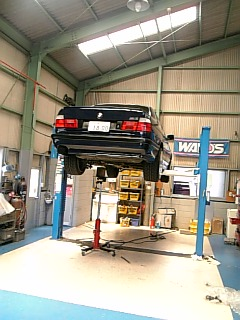
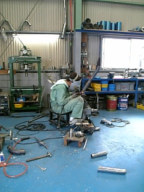
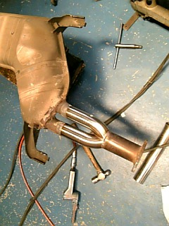
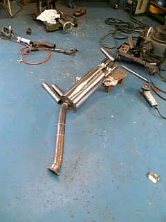
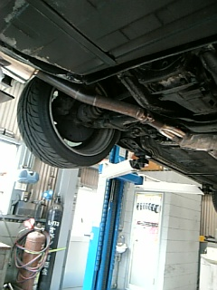
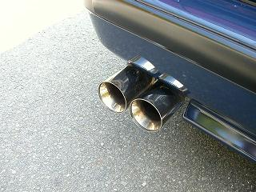

2006/7/28 マフラーの製作と交換
 一部腐食していたので、素材持込でリヤマフラーを製作してもらいました。 |
 今回作業をお願いしたリバースの社長さん＾＾ワガママなオーダーも形にしてくれる。 |
 イイ感じです＾＾ |
 今回持ち込んだマフラーは、E32 735i用だったのでポン付けできるかも？なんて考えていたけど、、甘かった＾＾； ステー類を微妙に位置変更していきます。 |
 着けては外し、微調整をしていきます。完成まで8時間かかりました。。 |
 アイドリングでは、重低音で535って感じです。 |